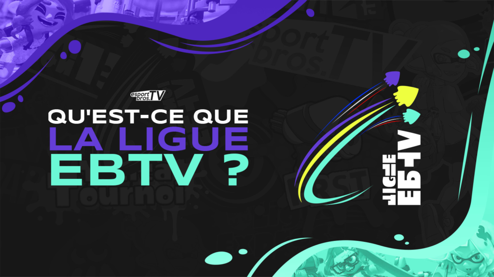
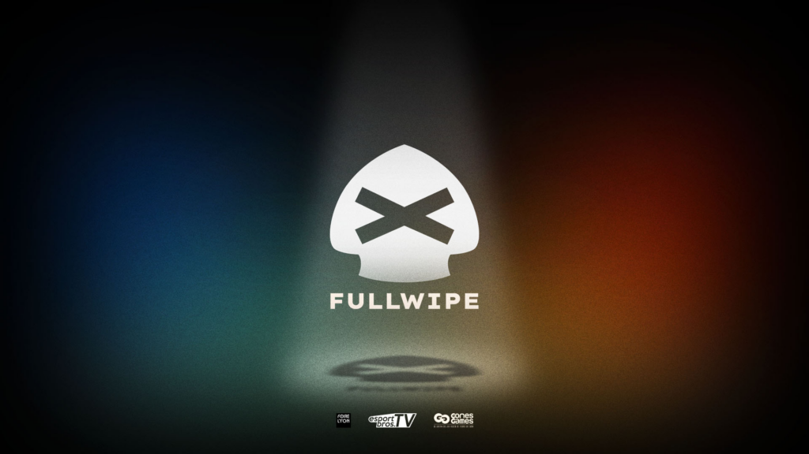
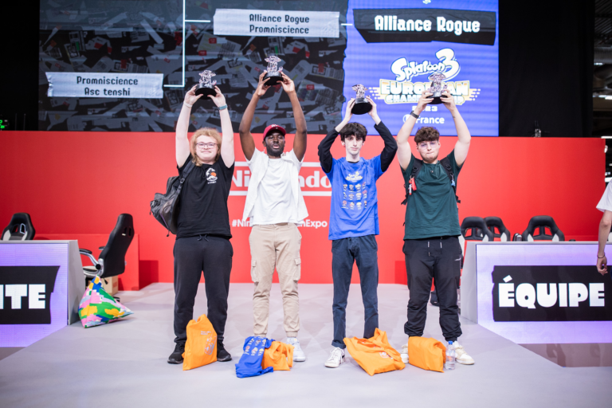
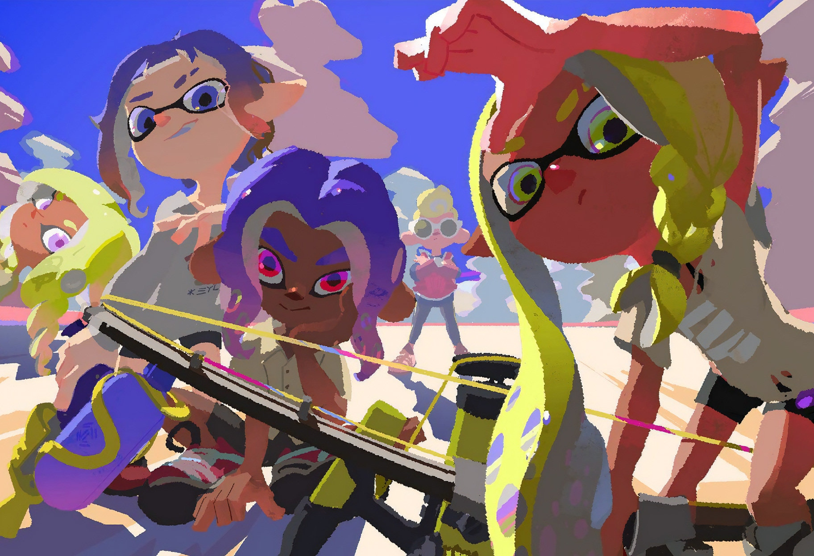

La scène compétitive sur Splatoon 3
EBTV:

La Ligue EBTV est le plus grand championnat francophone sur Splatoon 3, lors de sa 3ème saison en 2024. Cette compétition a rassemblé 75 équipes et plus de 440 joueurs, répartis dans 12 divisions. Ils possèdent un site internet, cliquez ici pour en savoir plus.

Fullwipe est un événement incontournable pour les passionnés de Splatoon 3 et de l'eSport en général. L'édition 2024 s'est déroulé les 30 et 31 mars à Lyon et en ligne, rassemblant des joueurs de toute l'Europe. Ce tournoi est connu pour son ambiance conviviale et compétitive, attirant des équipes talentueuses. Un nombre de 37 équipes ont participées, ce qui en fait l'un des plus grands tournois en LAN sur Splatoon en Europe.

Pour finir ils ont aidé été invités par Nintendo lors du combat pour le titre de Champions de France en 2023 pour commenter le match sur scène au grand public lors de la Japan Expo.
A l'international:
LUTI:

LUTI ou League Under The Ink est la plus grande ligue compétitive sur Splatoon. LUTI est reconnue pour rassembler des équipes de tous niveaux, offrant une plateforme où les joueurs peuvent s'affronter dans des matchs palpitants. La saison 13 a même vu 457 équipes participer, ce qui en fait l'un des plus grands événements de Splatoon à ce jour . La ligue utilise un système de division qui permet aux équipes de jouer des matchs équitables. Ils possèdent aussi la communauté la plus active.
Sendou:

SendouQ est un système de classement compétitif où les joueurs peuvent s'affronter dans des matchs classés, que ce soit en solo ou en équipe. Cela permet à chacun de tester ses compétences contre d'autres joueurs de différents niveaux.
Leur site sendou.ink possède énormément de fonctions et regroupes toutes les fonctions nécessaires pour un joueur compétitif tel qu'un un système de tournois complet, permettant aux joueurs de participer à des compétitions organisées. Les formats incluent l'élimination simple, l'élimination double, le round robin et le système suisse, ce qui offre une grande flexibilité pour les équipes. Il facilite la gestion des tournois et le site est à l'écoute des retours utilisateur. Il héberge de grands tournois tel que LUTI.
Pourquoi est-ce devenu une passion

Avec son style unique et un gameplay très dynamique, j'ai perçu ce jeu dès son premier opus en tant que joueur casual. Mais ce fut à la sortie du 3ème opus de la série que j'ai commencé à m'intéresser à cette scène du jeu. Ce qui me semble le plus incroyable est que cette communauté compétitive s'est formé toute seule sans l'aide de Nintendo et maintenant on arrive à atteindre des seuils d'argent à remporter de plus en plus fou à remporter comme à la dernière édition de fullwipe qui a atteint 2300€.